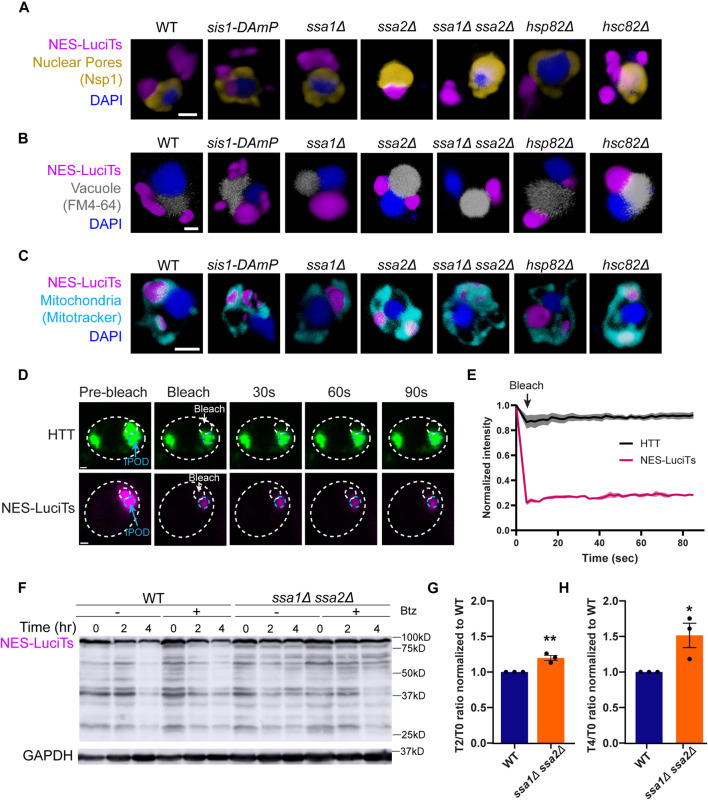

juxtanuclear quality control compartment
A cytoplasmic, perinuclear protein-quality-control inclusion characterized in budding yeast, formed by congregation of misfolded-protein deposits near the nuclear envelope and distinct from the intranuclear quality control compartment. [DOI:10.1038/s41556-023-01128-6]

NCBITaxon:1247190) · Sarah Rolli, Chloe A. Langridge and Emily M. Sontag (2024), Figure 2; CC BY 4.0, via PubMed Central. Unmodified. · CC_BY_4_0 · source: PMC PMC11372896.1 F2 · DOI:10.3389/fmolb.2024.1427542Synonyms: JUNQ
Part of: GO:0005737
Components
| Component | Type | Part of / acts on | Grounding | Genes | Stoichiometry | Essential | Role |
|---|---|---|---|---|---|---|---|
| heterogeneous JUNQ protein cargo | OTHER | part of | REVIEWED_LABEL_ONLY | UNKNOWN | Misfolded protein material concentrated in cytoplasmic deposits that congregate near the nuclear envelope.
| ||
| Hsp104-type disaggregase | PROTEIN | acts on | REVIEWED_LABEL_ONLY | HSP104 | UNKNOWN | Associated disaggregase localized to cytoplasmic JUNQ by correlated microscopy. This association is not a fixed coat or evidence of universal assembly dependence.
| |
| proteasome complex | PROTEIN_COMPLEX | acts on | GO:0000502 | UNKNOWN | Historically reported proteolytic machinery recruited to JUNQ-designated reporter inclusions, not an invariant constituent or universal formation requirement. Early perinuclear assignments can include nuclear INQ and are not all reclassified as modern cytoplasmic JUNQ.
|
Organism-specific protein examples
Named proteins in which each component's role was established, with the organism the evidence comes from. The component above is the taxon-agnostic family; these are the specific entries behind it.
Hsp104-type disaggregase
| Accession | Protein | Gene | Organism | Entry |
|---|---|---|---|---|
UniProtKB:P31539 | Heat shock protein 104 | HSP104 | Saccharomyces cerevisiae S288C (NCBITaxon:559292) | REVIEWED |
Role and evidence (2 references)Reviewed reference-sequence example, not a reassignment of experimental strains to S288C.
| ||||
Canonical examples
NCBITaxon:4932Saccharomyces cerevisiae — Species demonstrated in nuclear-envelope-resolved microscopy and reporter perturbations. Methods defer strain details to an unread supplemental table; individual 2023 assays are not assigned a finer taxon. [DOI:10.1038/s41556-023-01128-6]NCBITaxon:1247190Saccharomyces cerevisiae BY4741 — Methods Table 2 identifies BY4741 wild type and derived mutant backgrounds for the 2024 experiments. Native NCBI taxonomy verifies this strain ID; the mutants are derivatives, not assertions that their genotype is wild type. [DOI:10.3389/fmolb.2024.1427542]NCBITaxon:559292Saccharomyces cerevisiae S288C — Reference-sequence taxon for the reviewed Hsp104 example only, not a replacement for the experimental BY4741 background. [UniProtKB:P31539]
Functions
- spatial sequestration of cytoplasmic misfolded proteins — Concentrates selected misfolded proteins in cytoplasmic deposits near the nucleus. This does not imply that every misfolded protein enters JUNQ or that deposition universally protects cells.
DOI:10.1038/s41556-023-01128-6Results S1 and S5, Figures 1 and 4: reporter localization and correlated microscopy resolve cytoplasmic JUNQ.DOI:10.3389/fmolb.2024.1427542Results 3.1-3.4 distinguish perinuclear congregation from peripheral reporter deposition.
- conditional clearance of sequestered protein cargo — JUNQ-associated reporter cargo can be cleared through vacuolar and proteasome-associated routes under tested conditions. Their relative contributions depend on reporter and assay; the precise membrane route into the vacuole remains unresolved.
DOI:10.1038/s41556-023-01128-6Results S8 and Figure 7 combine cytoplasmic Keima acidification, reporter turnover and protease-sensitive fragments; direct time-resolved budding in Figure 8 concerns INQ, not JUNQ.DOI:10.3389/fmolb.2024.1427542Results 3.5 and Discussion show Atg1/Atg8-sensitive clearance but little bortezomib effect in these NES-LuciTs assays, and leave the route into the vacuole open.
- conditional retention of recoverable reporter protein — In the original JUNQ-designated Ubc9Ts assay, cooling restores diffuse fluorescence in an Hsp104-sensitive manner, consistent with a recoverable protein pool. This is not a universal client-refolding claim or a direct activity measurement, and early compartment assignments have nomenclature limitations.
DOI:10.1038/nature07195Results S6 and Figure 6e describe fluorescence recovery after temperature downshift and Hsp104/guanidinium perturbation.DOI:10.1038/s41556-023-01128-6Results S2 delimit historical JUNQ assignments in proteasome-inhibited cells by resolving additional nuclear INQ.
Mechanism graphs
Conditional assembly and sorting of cytoplasmic reporter deposits (ASSEMBLY)
Heat-induced misfolding, Q-body congregation and sorting perturbations are distinct experimental readouts.
| Subject | Predicate | Object | Evidence |
|---|---|---|---|
| Heat shift to 37 C | induces | Temperature-sensitive misfolded reporter cargo |
|
| Temperature-sensitive misfolded reporter cargo | accumulates in | Cytoplasmic Q-body deposits |
|
| Cytoplasmic Q-body deposits | congregate into | juxtanuclear quality control compartment |
|
| Temperature-sensitive misfolded reporter cargo | can accumulate in | Peripheral reporter foci |
|
| Combined SSA1 and SSA2 deletion | impairs | juxtanuclear quality control compartment |
|
| BTN2 deletion | impairs | juxtanuclear quality control compartment |
|
| HSP42 deletion | reduces | Peripheral reporter foci |
|
Conditional positioning and INQ/JUNQ convergence (FUNCTION)
Coexpressed inclusions remain separated by the nuclear envelope while converging spatially.
| Subject | Predicate | Object | Evidence |
|---|---|---|---|
| juxtanuclear quality control compartment | participates in | Spatial INQ/JUNQ convergence across the nuclear envelope |
|
| CHM7 deletion | impairs | Spatial INQ/JUNQ convergence across the nuclear envelope |
|
| VPS23 deletion | disrupts | Spatial INQ/JUNQ convergence across the nuclear envelope |
|
| VPS34 deletion | disrupts | Spatial INQ/JUNQ convergence across the nuclear envelope |
|
| VPS15 deletion | disrupts | Spatial INQ/JUNQ convergence across the nuclear envelope |
|
| NUP120 deletion with clustered nuclear pores | biases | JUNQ adjacency to clustered nuclear pores |
|
Perturbations of JUNQ-associated cargo clearance (DISASSEMBLY)
Separate reporter assays support conditional vacuolar clearance and persistence phenotypes.
| Subject | Predicate | Object | Evidence |
|---|---|---|---|
| juxtanuclear quality control compartment | can undergo | Clearance of JUNQ-associated reporter cargo |
|
| NVJ1 deletion | impairs | Clearance of JUNQ-associated reporter cargo |
|
| VAC8 deletion | impairs | Clearance of JUNQ-associated reporter cargo |
|
| VPS4 deletion | impairs | Clearance of JUNQ-associated reporter cargo |
|
| ATG1 deletion | impairs | Clearance of JUNQ-associated reporter cargo |
|
| ATG8 deletion | impairs | Clearance of JUNQ-associated reporter cargo |
|
| PEP4 deletion with PMSF vacuolar-protease inhibition | impairs | Clearance of JUNQ-associated reporter cargo |
|
Discussions
- INTERPRETATION (RESOLVED): Keep modern cytoplasmic JUNQ separate from INQ, IPOD and related deposits. Shared perinuclear proximity and changing nomenclature do not establish exact identity.
- CURATION_TODO (OPEN): Resolve exact source-neutral grounding for variable cargo and Hsp104-type machinery. Variable client material and a narrow disaggregase class cannot be grounded by broader sequence families.
- INTERPRETATION (RESOLVED): Separate cargo and directly localized machinery from genetic positioning and clearance factors. Deletion dependence alone is not direct residence, fixed composition or essentiality.
- INTERPRETATION (RESOLVED): Preserve assay-dependent proteasome effects and the unresolved route of JUNQ entry into the vacuole. Reporter turnover, puncta counts and precise membrane trafficking are different claims.
- INTERPRETATION (RESOLVED): Preserve caption and reporter-label discrepancies without silently resolving them. Source metadata, captions, methods and actual pixels do not always agree.
- CURATION_TODO (OPEN): Resolve native client inventories, material state, prevalence and exact strain mapping for older assays. Induced reporter observations do not establish universal dimensions, composition or lineage distribution.
Evidence
DOI:10.1038/s41556-023-01128-6Sontag et al. (2023), PMID 37081164, PMC12349969.1. Native metadata/JATS verified, not retracted. Read Results S1-S8, Discussion S9, strain-table pointer S35, Data availability S46 and main Figure 3-7 captions. Actual figures, supplemental strain table and raw source data were not inspected. TDM metadata is not a Creative Commons hosting licence.DOI:10.3389/fmolb.2024.1427542Rolli et al. (2024), PMID 39234568, PMC11372896.1. Read main Methods including strain Table 2, Results 3.1-3.5, Discussion, Data availability and figure captions; actual Figure 2 inspected. Supplemental materials and raw data were not independently inspected.DOI:10.1038/nature07195Kaganovich et al. (2008), PMID 18756251, PMC2746971.1. Native metadata/JATS verified, not retracted. Read Results S3-S6, Discussion S7 and Methods Summary S8. Actual figures and supplements were not inspected in this iteration; historical nomenclature is qualified.GO:0016234Native QuickGO verifies active inclusion body as a broader cellular-component parent.GO:0005737Native QuickGO verifies active cytoplasm; modern nuclear-envelope-resolved imaging supports cytoplasmic parthood, not nuclear or vacuolar parthood.
Curation history
2026-10-05T09:13:16Zcodex · CREATED_RECORD — Scaffolded by scripts/new_record.py2026-10-05T09:21:09Zcodex · EXPANDED_RECORD — Added cytoplasmic JUNQ identity, bounded cargo and machinery classes, three intervention graphs, historical and assay-scope discussions, and an inspected CC BY 4.0 figure.
Source: data/structures/inclusion/juxtanuclear_quality_control_compartment.yaml